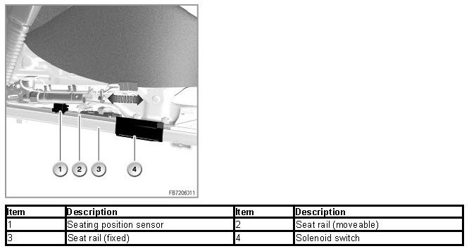
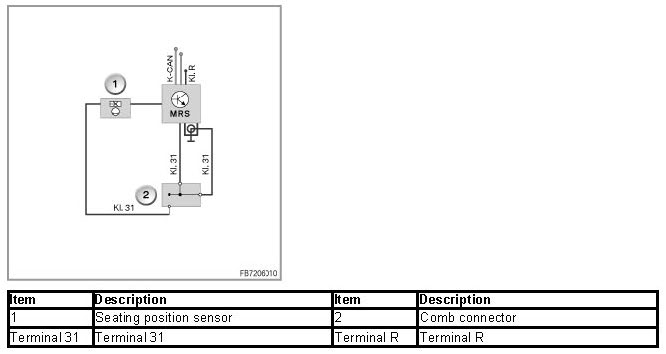

Crash Safety Module
Crash Safety Module
Crash safety module
The crash safety module (ACSM) has the following tasks:
- Detecting an accident situation that is critical for the occupants
- Activating the necessary restraint systems (selectively depending on the severity of the accident and accident type)
Brief description of components
The following components are described for the crash safety module:
ACSM control unit
All inflator assemblies and sensors are connected directly to the ACSM control unit. The ACSM control unit evaluates the data from the sensors. In the event of a collision, the ACSM control unit decides whether seatbelt tensioner and airbag triggering is required and which airbags have to be triggered.
Two acceleration sensors are fitted in the ACSM control unit. The longitudinal acceleration sensor detects frontal or rear-end collisions. The lateral acceleration sensor acceleration sensor detects a side impact.
An ignition capacitor is fitted in the ACSM control unit. If the power supply is interrupted in a collision, the ignition capacitor serves as an energy reserve for the ACSM control unit.
Airbag control lamp
The airbag warning lamp indicates the proper functioning of the crash safety module. The airbag warning lamp in the instrument cluster is activated by the ACSM control unit via the K-CAN.
Seat belt warning lamp
The seat belt warning lamp is the visual seat belt warning. The visual seat belt warning tells the occupants to fasten their seat belts. The visual seat belt warning is started as of terminal 15 On.
The visual seat belt warning is displayed as follows:
- Seat belt warning lamp in the instrument cluster
- Check Control symbol in the LC display in the instrument cluster
Indicator lamp for passenger airbag deactivation:
If the indicator lamp for passenger airbag deactivation (passenger's airbag off-lamp) lights up, the following airbags on the passenger's side are disabled: Passenger's airbag and side airbag.
The passenger airbag off lamp is continuously monitored via the ACSM control unit. A fault in the power supply or a defective lamp is stored in the fault code memory of ACSM control unit. If this occurs, the airbag warning lamp is switched on.
Fuel pump
Depending on the severity of the accident, the flow of fuel is also interrupted. The DME or DDE switches the electric fuel pump off.
Seating position sensor (only E88)
According to the regulations of the FMVSS (Federal Motor Vehicle Safety Standard), a 5 % woman must be distinguished from a 50 % man on the driver's seat. The seating position sensor detects the airbag range designed for a person with regard to the seat adjustment in longitudinal direction.

The seating position sensor is a Hall sensor and it is supplied with voltage via the ACSM control unit. The current intensity changes depending on the distance of the seat position switch to the magnet holder.

The signal of the seating position sensor also influences the delayed triggering of stage 2 of the inflator assembly (driver's and front passenger's airbag).
Notes for Service department
General Information
The following general data is provided for servicing the ACSM:
- Disconnecting the battery terminals
- Checking components of the crash safety module
- Fitting approved seat covers
Disconnecting the battery terminals
NB: After disconnecting the battery terminals, wait 1 minute before starting work on the ACSM safety system.
After disconnecting the battery terminals, 1 minute must be waited before starting work on the ACSM safety system. The waiting period ensures that the capacitors with the energy reserve of the system are completely discharged. This prevents inadvertent triggering of airbags or seatbelt tensioners.
Checking components of the crash safety module
NB: Do not test components of the safety system with multimeters or other universal test devices.
Testing with a multimeter or other universal test tools can lead to accidental deployment and injuries. For system diagnosis, use only the BMW diagnosis system.
NB: Do not connect any electrical test devices to the wiring harness of the crash safety module.
Do not connect any electrical test devices to the wiring harness of the crash safety module as long as the wiring harness is connected to a component of the safety system. Accidental activation and injury can occur. For system diagnosis, use only the BMW diagnosis system.
NB: Check the ACSM safety system after repairing damage caused by an accident.
If damage is repaired after an accident, the safety system ACSM must be tested using the BMW diagnosis system (even if the restraint system was not triggered in the accident).
Fitting approved seat covers
NB: only fit approved seat covers.
Do not fit seat covers, cushions or other objects on the front seats that have not been specially approved for seats with integrated side airbags. Do not hang articles of clothing, e.g. jackets, over the front seat backrests. This severely impairs or disables the airbag function.
Diagnosis instructions
NOTE: After 3 crash signals with triggering of the safety system, replace the ACSM control unit.
The ACSM control unit stores data in a non-erasable memory after a triggering of the safety system. After 3 crash signals, the data memory is full. The airbag warning lamp lights up. The ACSM control unit must be replaced.
Notes on coding / programming
NOTE: Deactivating the acoustic seat belt warning
The acoustic seat belt warning can be disabled by means of coding. This does not affect a legally stipulated seat belt warning.